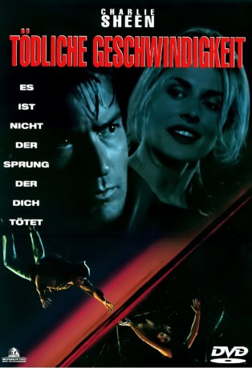
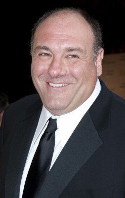
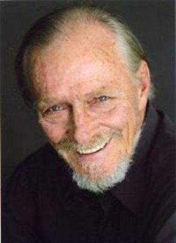
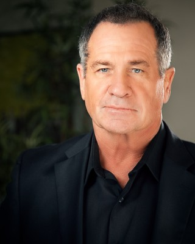
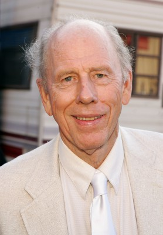
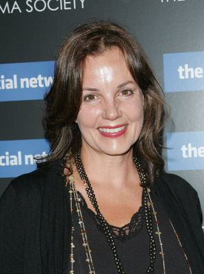

#9917 Tödliche Geschwindigkeit
Alternativ: Terminal Velocity
 
 IMDB-Wertung: 5.4 / 10
IMDB-Wertung: 5.4 / 10  Metascore: 0
Metascore: 0 
Ditch Brody ist Fallschirmspringer und ein chaotischer Freak. Eines Tages kommt eine hübsche Kundin in seine Sky-Diving-Schule und möchte von ihm unterrichtet werden. Doch schon beim ersten Sprung passiert ein tragischer Unfall. Scheinbar ist sie aus dem Flugzeug gefallen und ihr Schirm hat sich nicht geöffnet. Wenig später stellt sich aber heraus, daß es sich um eine Ex-KGB-Spionin handelte, die plötzlich wieder quicklebendig ist.
Jahr: 1994
Dauer: 101 Minuten
FSK: 12
Land: USA Studio: Buena Vista PicturesTonspuren: DD5.1 - ,
Untertitel: Englisch,
Auflösung: 720p (1280x536) Größe: 4761 MB
Genre: Action, Thriller, Liebe, Mystery
Regisseur: Deran Sarafian
Drehbuch: David Twohy
Soundtrack: Joel McNeely
Darsteller:
 Charlie Sheen als Richard 'Ditch' Brodie
Charlie Sheen als Richard 'Ditch' Brodie- Nastassja Kinski als Chris Morrow / Krista Moldova
-  James Gandolfini als Ben Pinkwater
- Christopher McDonald als Kerr
- Gary Bullock als Lex
-  Hans Howes als Sam
- Melvin Van Peebles als Noble
- Cathryn de Prume als Karen
- Terry Finn als Birthday Mom
- Tim Kelleher als Jump Junkie #1
- Brooke Langton als Jump Junkie #2
- Tim Lounibos als Jump Junkie #3
- Sofia Shinas als Broken Legs Max
- Cynthia Shope als Babe
-  John Meier als Gunman #2
- Evgeniy Shutov als Foreign Minister
- Sanford Gibbons als Greyhound Clerk
-  Rance Howard als Chuck, Stunt Pilot
- Mo Beatty als # 1 Birthday Girl (uncredited)
- Mayya Bulgakova als Krista's Mother (uncredited)
-  Margaret Colin als Joline Jo (uncredited)
- Yuriy Nazarov als Krista's Father (uncredited)
- Suli McCullough als Robocam
- Richard Sarafian Jr. als Dominic
- Lori Lynn Dickerson als Helicopter Newscaster
- Martha Vazquez als Newscaster
- Matthew Mazuroski als Tom, Jump Instructor
- Chester Bennett als Vlad
- Billy Hank Hooker als Gunman #1
- Terey Summers als Cashier
- Sam Smiley als Corvette Owner
- Kurek Ashley als Cargo Pilot
- Paul Guyot als Car Wash Attendant
- Robert L. Lee als FAA Inspector #1
- Michael Gaughan als FAA Inspector #2
- James R. Wilson als Bartender
- Michelle Crisa als Stewardess
- William Bolander als Hiker (uncredited)
- Debbie Overbey als Hiker (uncredited)
- Elizabeth Sommers als Stewardess (uncredited)
Datei: X:\1994\Tödliche Geschwindigkeit (1994, FSK12, 1280x536).mkv seit 08.11.2018
Festplatte: HD 1992-1995
 Es gibt insgesamt 67 Filme in der Gruppe '1994'
Es gibt insgesamt 67 Filme in der Gruppe '1994'